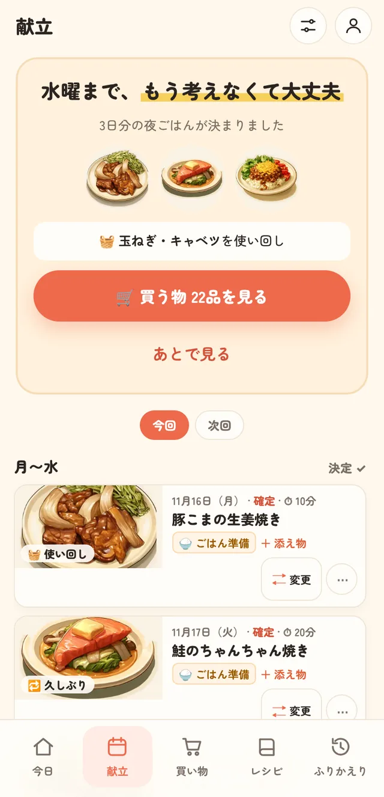
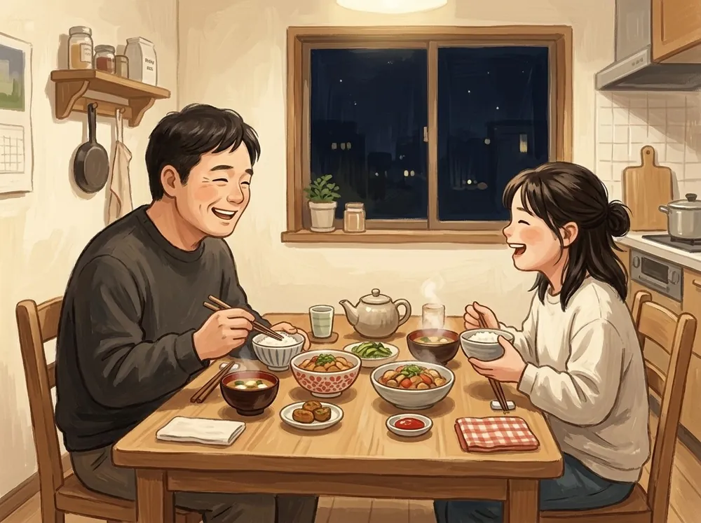

リピごちが生まれた夜
「え、それおとといも食べたよ。」
作ったのは、娘とふたり暮らしの父親。
このひと言が、はじまりでした。
📖 つくった理由を読む
平日の19時。仕事帰りのスーパーで、スマホを片手に立ち止まる。
「今日なに食べたい？」と送ってみても、返ってくるのは「なんでもいい」。
迷った末に、いつもの材料をかごへ。急いで作って、テーブルに出したとたん――
「え、それおとといも食べたよ。」
悪気のない、ひと言。でも、ちょっとだけ、しゅんとする。
ほんとうは、「おいしい！」って顔が見たかっただけなのに。
「今日は納豆パスタでいい？」「パスタは一昨日食べたじゃん」。わが家の、ほんとうにあった夜です。
何をいつ食べたかなんて、忙しい毎日で覚えていなくていい。
それは、リピごちが覚えておきます。
